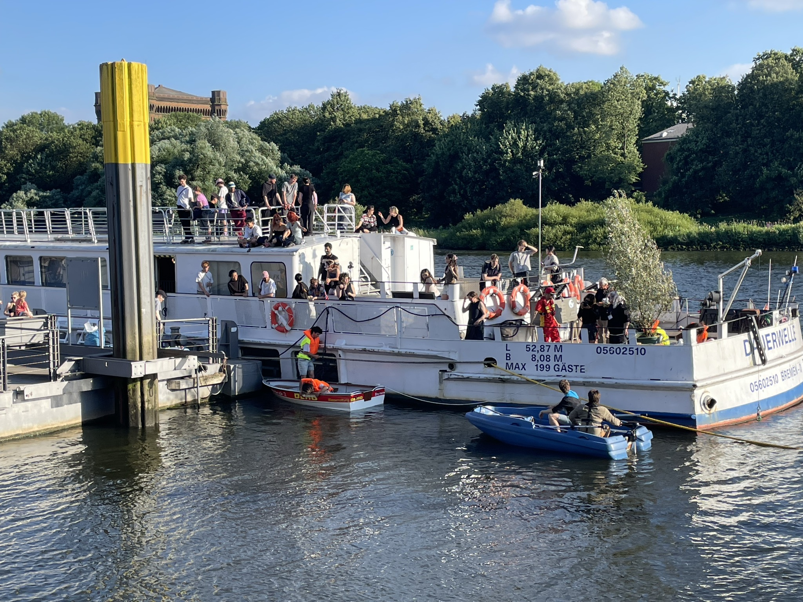
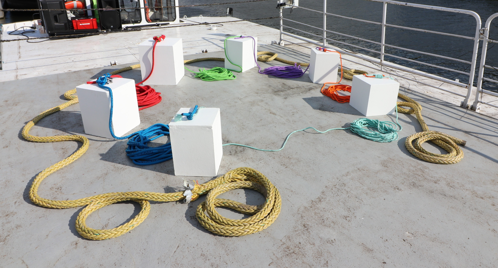
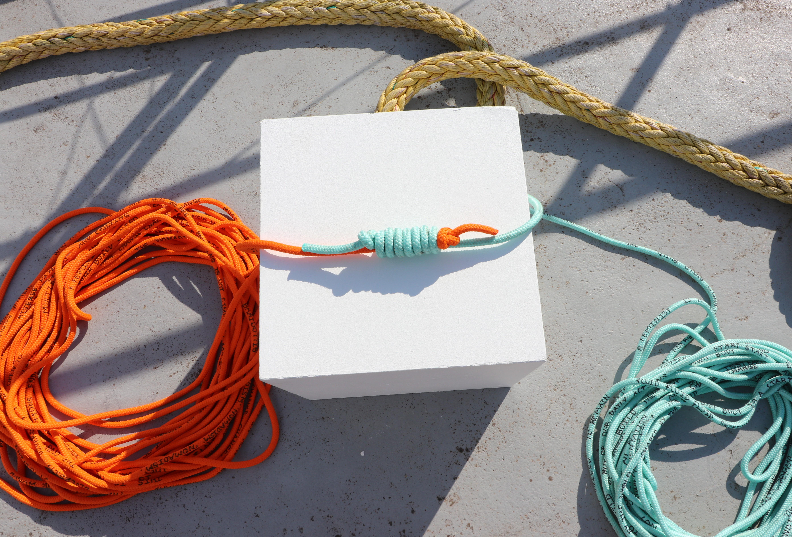

"becoming-nomads" draws upon the nomadic and patriarchal histories of the ship to explore the "Nomadic Subject," a concept rooted in feminist practices, particularly the writings of Rosi Braidotti. The work proposes a space of inclusion where diverse participants engage in a collective, relational act: a continuously changing structure composed of coloured nautical ropes carrying fragments of text. Visitors are invited to sit together, read the texts, tie new knots, and pass the ropes to one another — continuously transforming the structure.
Wherever lines cross, pass through, bend around and become entangled, a knot inevitably emerges.
"One must start by leaving open spaces of experimentation, of search, of transition: becoming-nomads." — Rosi Braidotti
Within the group, I was responsible for the project's public-facing presence and documentation: managing the @temporary_spaces Instagram account throughout the preparation and exhibition period, acting as the project photographer during both the build-up and the exhibition itself, and documenting all related events. I also designed the poster and GIF and handled email correspondence for the project. During Breminale, I presented becoming-nomads on-site aboard the Dauerwelle.




